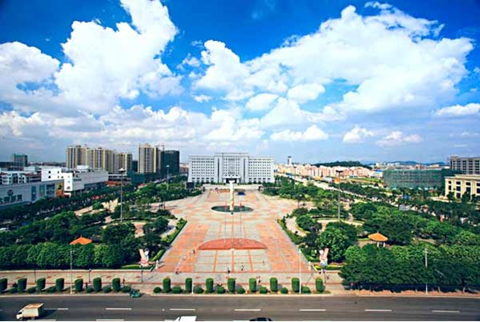

大岭山镇位于东莞市中南部，面积95平方公里，辖下23个村委会（社区）,全镇30多万人，其中户籍人口约4.7万人，是中国家具出口第一镇、中国家具出口重镇、国家卫生镇、中国绿色名镇、国家级生态乡镇、广东省教育强镇、广东省卫生镇、广东绿色名镇、广东省生态示范镇。大岭山环境宜居宜商，东临松山湖、北靠同沙生态公园、西南依大岭山森林公园，有马山、更鼓楼、石洞等休闲旅游区，有体育公园、大岭山广场、大岭山公园、湿地公园等城市基础配套，有天和百货、华润万家等一批大型购物中心。大岭山文化底蕴深厚，有以东纵抗日旧址、东纵纪念馆为代表的东纵红色文化，以森林公园、湿地公园、马山庙道教文化风景区等为依托的文化旅游品牌，以“大岭山杯”金斧奖中国家具设计大赛为载体的家具文化，还有莞香文化和荔枝文化等。